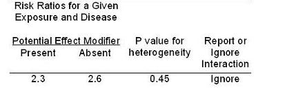
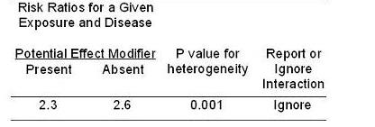
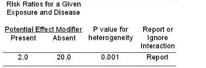
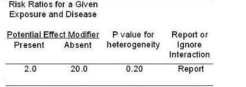
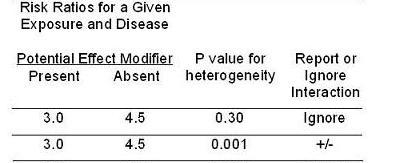
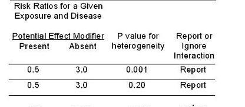

Examples of Reporting or Ignoring Interactions
Lead Author(s): Jeff Martin, MD
These are guidelines for reporting or ignoring interactions. First consideration must be given to the clinical, statistical, and practical decisions.
Effect Small - P-Value Large - Ignore
If the two strata give results of 2.3 and 2.6 and a p-value for the test of heterogeneity of 0.45, what should we do with it?
- We should ignore this difference and not report the presence of interaction.

Effect Small - P-Value Small - Ignore
What if the p value is 0.001?
- This is an example of where we should still ignore it because this difference really is pretty small from a clinical or biologic perspective -- not substantively meaningful.

Effect Large - P-Value Small - Report
What if we got 2.0 in one stratum and 20 in another and a p value of 0.001.
- Here, this is worth reporting.

Effect Large - P-Value Getting Larger - Report
If we saw a difference of 2 and 20 and a p value of 0.2,
- we still might want to report or show this interaction rather than ignoring it.
As the p value gets higher, I would be less and less interested in reporting and more and more interested in just lumping the stratum together.

Effect Not Big - Depends on P-Value
How about a difference between 3 and 4.5?
- This is not that big a difference in clinical or biological terms.
- Hence I would probably ignore it if the p value was 0.3 and be on the fence about it even if the p value was very small.

Qualitative Interaction - Report
Finally, how about in the presence of what appears to be qualitative interaction?
- I would have a lower threshold to report it, perhaps even up to a p value of 0.2.

Again, the p value does not have any different meaning here than in other contexts and I am not saying that a p of 0.2 is statistically significant.
I am just stating that it is reasonable to report stratum specific differences of large magnitude, even if the p value is up to 0.2.
Such a report still requires dedicated confirmation in other studies, hopefully with adequate statistical power.